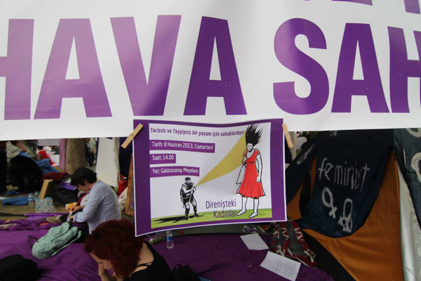
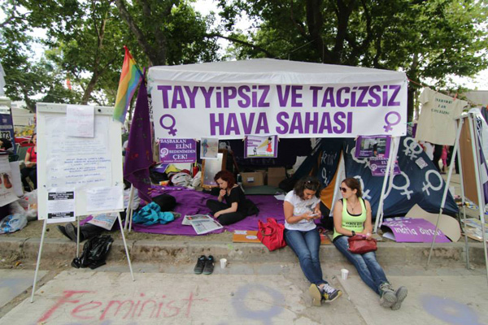

پذيرش > تریبون > مقالات > خیزشی شبیه معجزه در ترکیه
 مصاحبه با ملک اوزمن،فمینیست مستقل ترک مصاحبه با ملک اوزمن،فمینیست مستقل ترک

 خیزشی شبیه معجزه در ترکیه خیزشی شبیه معجزه در ترکیه
20 خرداد 1392 - مصاحبه و ترجمه : سیما حسین زاده - نسخه قابل چاپ
تغییر برای برابری - تا یک روز قبل از شروع اتفاقات اخیر در ترکیه حتی خوش بین ترین فعالان اجتماعی ترکیه هم فکر نمی کردند مردم چنین حضوری در خیابانها داشته باشند و باعث شکل گیری چنین حرکت مردمی تحسین برانگیزی بشوند. بعد از گذشت سیزده روز مقاومت مردمی در خیابانهای ترکیه، امروز اغلب تحلیل گران سیاسی –اجتماعی این کشور اعتقاد دارند ترکیه دیگر به سیاق قبل نخواهد بود و در واقع بارها کلمه معجزه را جهت توصیف این خیزش به کار برده اند. متعرضین حاضر در خیابانها که منتقد و معترض به سیاستهای حزب عدالت و توسعه در حوزه اجتماعی هستند اعتقاد دارند که علیرغم پیشرفت اقتصادی که این دولت برای این کشور داشته ولی ما هر روز شاهد اعمال محدودیتهای بیشتر در حوزه های عمومی و اجتماعی جامعه هستیم. در یکی دوسال اخیر چندین طرح توسط این حزب تدوین و به مرحله اجرا گذاشته شد که اولین آن اعمال محدودیتهایی در مورد قانون سقط جنین بود و در پی آن در خواست رئیس دولت از زنان مبنی بر به دنیا آوردن سه فرزند، اعمال محدودیت زمانی در فروش الکل و ایجاد برخی تغییرات در سیستم آموزشی کشور با هدف اسلامی کردن این سیستم از جمله مواردی است که مردم ترکیه را خشمگین کرده است. علاوه بر اینها روزنامه نگاران و روشنفکران این جامعه نیز مدتهاست به دلیل اعمال سانسورهای شدید در رسانه ها دل خوشی از سیاستهای دولت اردوغان ندارند.

متنی که در پی می آید مصاحبه با ملک اوزمن* متولد شهر آرتوین ترکیه، فارغ التحصیل رشته سینما و تلویزیون یکی از فمینیستهای مستقل ترکیه در شهر استانبول است که در کنار فعالیتهای اجتماعی و محیط زیستی در تاسیس انجمن فیلم زنان "فیلم مور" به سال 2001 نقش داشته و ساخت چندین فیلم سینمایی همچون مِرال کو" 2012، "عصیان نسوان"2008، "ناموس چیست"2008 و چندین فیلم دیگر را نیز در کارنامه خود دارد.
*Melek Ozman
به نظر شما دلیل اصلی شروع این حرکت چه بود؟ آیا شما به عنوان فعالان مدنی ترکیه انتظار گسترده شدن ابعاد این حرکت را داشتید؟
جنبش پارک گزی روز جمعه 31 می در ساعات آغازین روز با حمله بیرحمانه پلیس به تحصن کنندگان داخل پارک که از چند روز پیش به دلیل جلوگیری از تخریب پارک توسط دولت با هدف احداث مرکز خرید در محل پارک شروع شده بود جرقه خورد. به جرات می توان گفت هیچ کس تا ساعات پایانی روز31 می وقوع چنین اتفاقاتی را نه تنها پیش بینی نمی کرد بلکه در واقع انتظار نمی رفت. من واقعا صبح اولین روز به شخصه فکر می کردم پارک گزی را هم مانند سینمای اِمِک EMEK از دست خواهیم داد. تظاهرات و تجمعات ما چندی پیش برای حفظ سینمای امک EMEK نیز با هجوم وحشیانه پلیس سرکوب شد و آنها توانستند این سینما را برای همیشه تخریب کنند... اما باز هم تا جایی که می توانستیم تلاش کردیم حرکت اعتراضی خود را ادامه دهیم. تمام طول روز جمعه تحصن فعالین در پارک ادامه داشت و دخالت پلیس و سعی آنها در متفرق کردن تجمع کنندگان از طریق ماشین های آب پاش و گاز فلفل نیز ادامه داشت. مردمی که شاهد هجوم وحشیانه پلیس به فعالان حاضر در پارک بودند آرام آرام و به طور کاملا خودجوش به ما پیوستند و اینگونه شد که کم کم و از فردای آن روز دامنه این اعتراضات از استانبول به شهرهای دیگر سرایت کرد. و نام "مقاومت کن گزی" به خود گرفت. دفتر کار ما در میدان تقسیم قرار دارد. بعد از هربار حمله خشونت بار پلیس برای تجدید قوا به دفترمان پناه می بردیم ولی آن روز به دلیل حجم بالای استفاده از گاز اشک آور و اسپری فلفل حتی نمی توانستیم پنجره های آنجا را باز کنیم تا شاید نفسی تازه کرده باشیم. طی هربار رفت و آمد به دفتر کار و محل تجمع ناباورانه می دیدیم که تعداد جمعیت در کوچه ها و خیابانها بیشتر می شود. نقش شبکه های اجتماعی در دعوت مردم به پیوشتن به معترضین گزی بسیار بالا بود فعالین اجتماعی توانستند از طریق این شبکه ها حمایت گسترده ای هم از داخل و هم خارج از ترکیه جلب کنند. در خیابانها و کوچه ها موقع فرار از دست پلیس حمایت اهالی منطقه را داشتیم که درهای خانه هایشان را به روی ما باز می کردند و با لیمو و سرکه جهت شستشوی چشمهایمان پذیرایی می کردند. حس همبستگی مردم عادی شگفت انگیز و غیر قابل باور بود رفتار آنها و حس همبستگی شان امید را در دل ما بیشتر و بیشتر می کرد. هیچ کس در خانه نمی ماند و هرکسی به دنبال کمک رسانی به زخمیها و آسیب دیدگان بود. حمله پلیس در شب جمعه بسیار وحشتناک بود و هیچ یک از ما احساس امنیت جانی نمی کردیم گو اینکه پلیس برای ما اعلان جنگ کرده بود لحظات ساعات بسیار سختی داشتیم اما با مشاهده حمایت مردم و همبستگی و اتحاد مردم امیدوارتر و مقاومتر می شدیم و همین هم باعث شد تا صبح هیچ کس پارک را ترک نکرد. جمعیت غیرقابل باور بود. مردم از همه جا می آمدند. مقاومت غیرقابل وصف بود. به همین دلیل هم توانستیم با قدرت هرچه تمام توانستیم روز شنبه هم وارد میدان تقسیم شویم و تا امروز این حرکت را به خوبی ادامه دهیم.
در کل می توانم بگویم اعتراضات برای جلوگیری از تخریب پارک گزی شروع شد امابه نظر من معنای دیگری به خود گرفت. ماجرای گزی باعث شد لیوان صبر مردم سرریز شود. درست است که تجمع برای پارک گزی بود اما مطالبات و خواسته های بسیاری همچون سینمای امک تا محدودیتهای جدید اعمال شده برای سقط جنین تا سخنان اردوغان برای سه فرزند داشتن زنان، چگونگی شیردهی نوزادان و عدم برابری زنان و مردان... همه و همه روی هم انباشته شد و به یکباره متوجه اعمال محدودیتهای هر روز بیشتر در حوزه اجتماعی، بدن و حتی برخورد با ما به عنوان ابزار در جهت امیال سیاسی شدیم. چرا که اردوغان و حزب او هر روز قوانین محدودکننده بیشتری را به تصویب رسانده و اعمال می کنند که دیگر مردم نمی توانند بیشتر از این به چنین رفتارهای غیردموکراتیک گردن بگذارند
اگر بخواهیم این حرکت اعتراضی را متشکل از گروههای مختلف بدانیم به نظر شما این گروهها کدامها هستند؟
نیمی از آنها زنانی هستند که بسیار هم خشمگین و جشور و قوی هستند. میانگین سنی بسیار جوان است . این حرکت را از هر منظری نگاه کنی این حرکت یک حرکت آزادیخواهانه است . به لحاظ سازماندهی هر روز بیشتر از قبل منسجم حرکت می کند. شاید در نگاه اول به خاطر اینکه معترضین وابسته به حزب سیاسی خاصی نیستند باعث ایجاد این تردید در اذهان می شود که دیر یا زود صدای اعتراض آنها خاموش خواهد شد اما برای من که از روز اول درگیر بوده ام چنین به نظر نمی رسد ما کاملا سازماندهی شده و با برنامه عمل می کنیم این حرکت در مقاومت، واکنش، تظاهرات یک حرکت سازماندهی شده است.

آیا به نظر شما این حرکت یک حرکت سکولار است ؟
شعارها و پلاکاردهای تهیه شده همگی بیانگر نظرات و تفکرات آزادیخواهانه این حرکت است. در مرحله بعد است که خواسته های سکولار نمود پیدا می کنند. می توانیم بگوییم یک حرکت سکولار است اما در کل بهتر است بگوییم این حرکت حرکتی آزادیخواهانه است.
برنامه فعالان جنبش زنان چیست؟ تا امروز چه کارهایی انجام داده اید؟
ما به عنوان فعالان حقوق زنان از روز اول در درون این حرکت حضور داشته ایم. ما به عنوان فمینیستهایی که در انجمن فیلم مور Filmmor فعالیت می کنیم از همان روز اول شکل گیری کمپین "مقاومت برای تقسیم" حضور داریم. ما برای حفظ سبک زندگی مان، پارکهایمان، سینماهایمان و به طور کلی فضاهای عمومی مان پا در این راه گذاشته ایم و به همین دلیل هم از روزی که خیزش پارک گزی شکل گرفت دوشادوش بقیه فعالان مدنی جهت طرح خواسته های آزادیخواهانه مان در خیابانها حضور داریم. مسلما یکی از اهداف بزرگ و اصلی ما به عنوان فمینیست حذف شعارهای جنسیت گرایانه است. پلاکاردها و شعارهای ما را می توان در همه جای پارک مشاهده کرد. با شعارهای جنسیت گرایانه، هموفوبیک و نژادپرستانه برخورد شدید می کنیم و تمام تلاش خود را می کنیم تا این حرکت بری از تمام این شعارها باشد و خوشبختانه تا امروز در حد زیادی هم موفق بوده ایم. در این فضا مبارزه کردن و حرف خود را به گوش انسانها رساندن حال و هوای غیرقابل وصف و امیدبخشی دارد.
چند روز پیش یک هیئت هفت نفره به دیدار آقای بلنت آرینچ معاون آقای اردوغان رفته بودند چرا در بین اعضای این هیئتی هیچ زنی دیده نمی شود؟
اذیت کننده ترین قسمت این حرکت تا به امروز برای فمینیستها همیین اتفاق بوده است چون که در انتخاب نهادها و سازمانهای نمایندگی این خیزش ما نیز حضور داشتیم اما در انتخاب افراد نه! نهاد ها و سازمانهای انتخاب شده در بین اعضای خود به اجماع رسیده بودند. موقع اعلام اسامی اعضای این هیئت ما نیز مانند بسیاری دیگر شگفت زده شدیم که چرا حتی یک نفر زن در بین آنها وجود ندارد و بلافاصله اعتراضات خود را به عنوان فعالان حقوق زنان در جلسه کمپین "مقاومت برای تقسیم" اعلام کردیم و قرار بر این شد که از این به بعد زنان هم حتما در چنین هیئتهایی حضور داشته باشند.
دستاورد دیدار این هیئت با آقای بلنت آرینچ چه بود؟
متاسفانه هیچ! هنوز هیچ اتفاق خوشایند و یا حتی سرنخی نیز نداشته است.
ارسال به
بالاترین
،
توییتر
،
فریندفید
،
فیسبوک
در همين بخش :
 دهمین دورۀ مراسم تندیس صدیقه دولت آبادی ۱۳۹۲ دهمین دورۀ مراسم تندیس صدیقه دولت آبادی ۱۳۹۲
کارت پستالهایی به بهانهی هشت مارس و به یاد همهی مبارزین راه برابری
بیانیه بیش از 350 تن از مدافعان حقوق زنان به مناسبت روز جهانی زن؛ زنان هر روز فرودستتر میشوند
لباسی که برای تن ما دوخته اند! /اعظم بهرامی
چالشها و چشمانداز فعالیت مدنی زنان
ديگر بخش ها :
طرح یک میلیون امضا
|
مقالات
|
سایت نوشته ها
|
اخبار
|
گزارش كمپين
|
گفت و گو
|
علیه سکوت
|
كوچه به كوچه
|
نامه های شما
|
گزارش ویژه
|
گفتگو با اعضا
|
ویژه سالگرد کمپین
|
تصویر برابری
|
دل آرام علی
|
تریبون
|
مقالات
|
تاریخ شفاهی
|
خارج از چارچوب
|
کتابخانه
|
درباره کمپین
|
کمپین در شهرها
|
کمپین در بند
|
صدای تغییر
|
ویژه 22 خرداد
|
لایحه حمایت از خانواده
|
گالری
|
عشا مومنی
|
امیر یعقوبعلی
|
خدیجه مقدم
|
راحله عسگری زاده و نسیم خسروی
|
پروین اردلان،جلوه جواهری، مریم حسین خواه، ناهید کشاورز
|
زینب پیغمبرزاده
|
سعیده امین، سارا ایمانیان، محبوبه حسین زاده، ناهید کشاورز و همایون نامی
|
احترام شادفر
|
نسیم سرابندی زاده،فاطمه دهدشتی
|
وبلاگ مهمان
|
پرونده خرم آباد
|
دستگیری ها
|
مریم مالک
|
پرستو اللهیاری
|
مهرنوش اعتمادی
|
سمیه رشیدی
|
Other Languages
|
همراهان
|
«فراخوان کمپین ده روز با بهاره هدایت»
| English
|